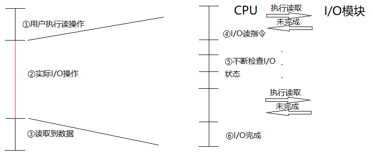
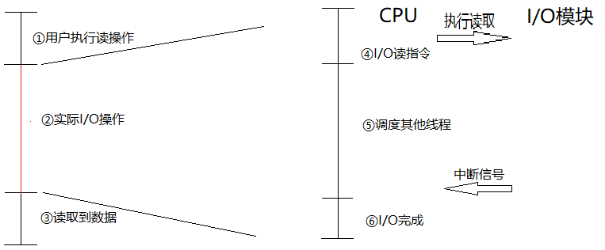

论坛
I/O中断原理
本文来源：博客园
本文作者：杰哥很忙
本文出处：https://www.cnblogs.com/Jack-Blog/p/12038716.html
说明：本站只做搬运，仅供学习和参考。
目录
前言
在Windows内核原理-同步IO与异步IO和《高性能网络通讯原理》两篇文章中，都出现了中断这两个字。本篇文章会对中断操作的原理进行说明。
什么是中断
中断指当出现需要时，CPU暂时停止当前程序的执行转而执行处理新情况的程序和执行过程。即在程序运行过程中，系统出现了一个必须由CPU立即处理的情况，此时，CPU暂时中止程序的执行转而处理这个新的情况的过程就叫做中断。
我们知道CPU是按指令顺序进行执行的，操作系统每过大约15ms会发生一次线程调度(Windows下)，根据线程优先级先调度优先级高的线程。但是实际情况并没有那么简单，若我们接收到一个网络请求，如果要等当前线程执行完或15ms线程调度之后才去处理网络请求，网卡缓冲区很有可能会被占满，此时就发生了丢包。
中断类型
中断分为硬件中断和软件中断。
硬件中断
硬件中断即为硬件发出的中断信号，如I/O中断和硬件失效中断。
- I/O中断：由I/O控制器产生，用于发送信号通知操作完成等信号。
- 硬件失效中断：如掉电或存储器奇偶错之类的故障。
软件中断
软件中断即为非硬件发出的中断信号，如程序中断和时钟中断。
- 程序中断：一些指令产生的异常(如算数移除、除数为0等)。
- 时钟中断：由处理器内部的计时器产生，允许操作系统以一定规程执行函数。
我们提到了操作系统每过大约15ms会进行一次线程调度，就是利用时钟中断来实现的。
I/O中断流程
本篇文章还是主要解释前几篇文章提到的I/O中断进行解释说明，因此仅以I/O中断举例，但是中断的原理和流程都是相似的。
I/O中断通过中断处理器执行中断操作。当外部设备的I/O模块准备好时，它会发送给CPU一个中断信号，CPU则会“立即”做出响应，暂停当前程序的处理去服务该I/O设备的程序。
也可能不是立即，比如同时存在多个中断，则根据实际的中断算法决定，是按中断先后顺序执行中断操作，还是按中断优先级执行。 I/O中断时硬件中断，需要硬件支持来接收中断信号。
无中断
为了更好的说明中断带来的性能提升，我们先描述一下没有中断时程序如何处理I/O操作。
- 当我们程序需要从硬盘读取一个文件时，会先检查内核缓存中是否有数据，若没有数据，则执行实际I/O操作。在I/O操作执行时，我们的用户线程将阻塞等待数据从硬盘写到内存中。对于用户来说线程是被阻塞的。
- 在实际的I/O操作过程中，若没有中断操作，CPU会不断轮询检查I/O操作是否完成，若I/O操作没有完成则继续调度其他线程，过一会儿再来检查。若操作完成，CPU将线程加入到线程就绪队列中并恢复线程上下文信息。
- 线程处于就绪队列，可以被操作系统调度从而继续执行读操作，此时会将数据从操作系统内核缓存读取到用户缓存中。
有中断
- 当我们程序需要从硬盘读取一个文件时，会先检查内核缓存中是否有数据，若没有数据，则执行实际I/O操作。在I/O操作执行时，我们的用户线程将阻塞等待数据从硬盘写到内存中。对于用户来说线程是被阻塞的。
- 在实际的I/O操作过程中，CPU向I/O模块(DMA控制器)发送读指令，然后就去调度其他线程。
- 当I/O模块(DMA控制器)I/O执行完成后，会产生中断信号在通知CPU，CPU将线程加入到线程就绪队列中并恢复线程上下文信息。
- 线程处于就绪队列，可以被操作系统调度从而继续执行读操作，此时会将数据从操作系统内核缓存读取到用户缓存中。
由此可知，有中断还是没有中断对于用户来说线程都是阻塞的，对于操作系统内核来说通过中断方式主动通知CPU的方式减少了线程轮询判断，提高了线程执行效率。
当然，为了进一步提高线程利用率，此时我们可以通过异步操作API执行I/O操作。
比如.Net4.5的async和await关键字，当调用异步操作后，API内部保存了相关状态机信息(回调信息)，线程继续执行其他操作，当操作系统内核读取数据完成时，线程调用回调方法恢复到await的后续操作。整个过程中线程不会因为阻塞带来导致性能损失。
中断处理
当I/O设备完成一次I/O操作时，发生以下事件：
- 开始I/O操作前，处理器将当前处理的相关信息如指令地址、必要的状态信息等保存到栈中，使得中断后可以恢复执行。
- I/O操作完成后，设备给处理器发送一个中断信号。
- 处理器响应中断信号。
- 处理器对中断信号进行判断，若存在未响应的中断，则给产生中断信号的设备发送确认信号，确认信号使得设备取消它的中断信号。
- 处理器将控制前转移给中断程序中，中断程序从栈中获取之前保存的信息，使得能继续执行I/O完成时的后续操作。
- 处理器将中断程序入口地址载入到程序计数器中，使得处理器能继续执行下一个指令周期。
相关文献
- 《操作系统-精髓与设计原理》
- 时钟中断是rt-thread的线程调度器的驱动力
每天收获一点点
微信扫一扫二维码关注订阅号杰哥技术分享
出处：https://www.cnblogs.com/Jack-Blog/p/12038716.html
作者：杰哥很忙
本文使用「CC BY 4.0」创作共享协议。欢迎转载，请在明显位置给出出处及链接。
评论
共有21条评论
|
我来说一句 |
搜狗百科：https://baike.sogou.com/v53369.htm?fromTitle=ASCII
百度百科：https://baike.baidu.com/item/ASCII/309296?fr=aladdin
维基百科：https://zh.wikipedia.org/wiki/ASCII
日历
| < | 2019年12月 | > |
| 日 | 一 | 二 | 三 | 四 | 五 | 六 |
| 1 | 2 | 3 | 4 | 5 | 6 | 7 |
| 8 | 9 | 10 | 11 | 12 | 13 | 14 |
| 15 | 16 | 17 | 18 | 19 | 20 | 21 |
| 22 | 23 | 24 | 25 | 26 | 27 | 28 |
| 29 | 30 | 31 | 1 | 2 | 3 | 4 |
| 5 | 6 | 7 | 8 | 9 | 10 | 11 |